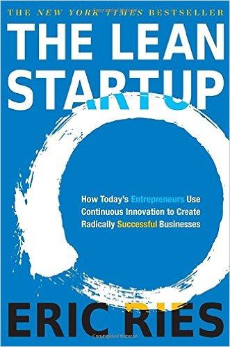

Lean startup is a methodology for developing businesses and products, which aims to shorten product development cycles by adopting a combination of business-hypothesis-driven experimentation, iterative product releases, and validated learning. The central hypothesis of the lean startup methodology is that if startup companies invest their time into iteratively building products or services to meet the needs of early customers, they can reduce the market risks and sidestep the need for large amounts of initial project funding and expensive product launches and failures.
The lean startup methodology was first proposed in 2008 by Eric Ries, using his personal experiences adapting lean management principles to high-tech startup companies. The methodology has since been expanded to apply to any individual, team, or company looking to introduce new products or services into the market. The lean startup's reputation is due in part to the success of Ries' bestselling book, The Lean Startup, published in September 2011. Amazon.com listed the book as one of their Best Business Books of 2011, and by June 2012 the book had sold 90,000 copies.
Ries' said that his first company, Catalyst Recruiting, failed because he and his colleagues did not understand the wants of their target customers, and because they focused too much time and energy on the initial product launch. Next, Ries was a senior software engineer with There, Inc., which Ries described as a classic example of a Silicon Valley startup with five years of stealth R&D, $40 million in financing, and nearly 200 employees at the time of product launch. In 2003, There, Inc. launched its product, There.com, but they were unable to garner popularity beyond the initial early adopters. Ries claims that despite the many proximate causes for failure, the most important mistake was that the company's "vision was almost too concrete", making it impossible to see that their product did not accurately represent consumer demand.
Although the lost money differed by orders of magnitude, Ries concluded that the failures of There, Inc. and Catalyst Recruiting shared similar origins: "it was working forward from the technology instead of working backward from the business results you're trying to achieve."

You can buy the book the Official Lean Startup website.